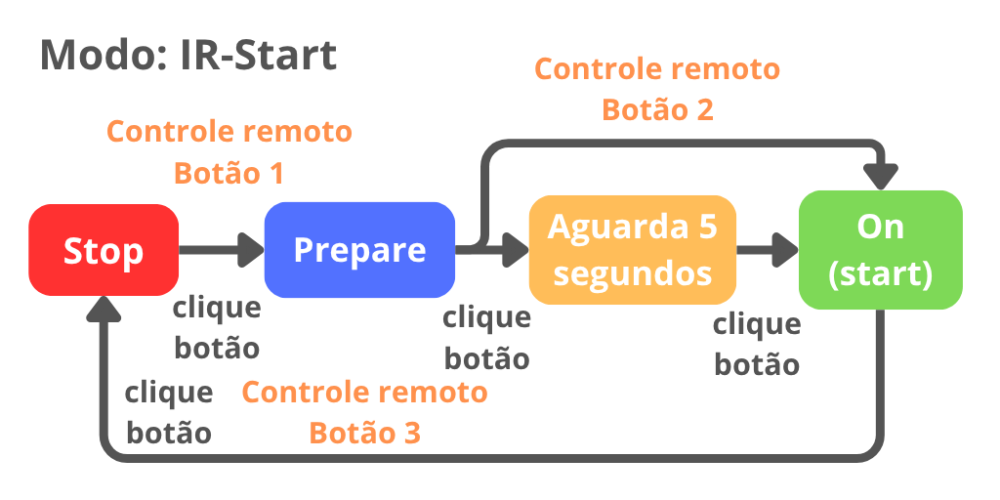
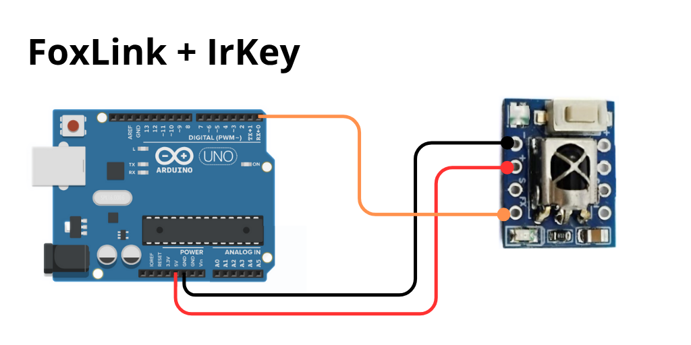

IrKey
Firmware V1.0
Módulo Leitor IR 3 em 1.
IR-StartAcionamento de robôs de sumô ou Seguidor de Linha, via Controle remoto ou botão com 5 segundos.- Receptor IR para 2 servos
- Leitor IR-Serial
Protocolos disponiveis no momento:
- SONY
- SAMSUNG
Pinout
| Pino | Descrição |
|---|---|
| Vcc | Alimentação 3V3 a 5V |
| GND | Alimentação 0V |
| S | saida digital 0 ou 1 |
| FX | saida USART Halfduplex (Leitura/Escrita) * |
Obs: O pino FX só trabalha com 3V3. Não é tolerante a 5V.
Utilização Modo IR-Start
Ao ligar, o modulo inicia no modo IR-Start, recebendo comando do controle do juiz seguindo a sequência de inicialização. Também é possivel acionar usando o botão com cliques.

| comando | botão | ação |
|---|---|---|
| Prepare | 1 | prepara o robô o LED de status pisca Azul |
| Start | 2 | A saida é acionada, acendendo o led da saida e o LED de status fica verde continuamente |
| Stop | 3 | A saida é desacionada, apagando o led da saida e o LED de status fica vermelho continuamente |
| Start 5S | - | Conta 5 segundos e depois inicia, mudando a cor de amarelo para verde aos poucos |

Leitura dos comandos IR via pino FX
Cada comando recebido é enviado via USART no pino FX. Essa funcionalidade pode ser desativada via registrador CTRL (mais detalhes em configuração).
As mensagens iniciam com o caracter ">" em seguida os dados são enviadas em formato CSV separado por virgula e com caracteres de fim de "\n\r".
Formato:
- Header: ">"
- Protocolo: "SONY" ou "SAMSUNG"
- Comando (Hexadecimal)
- Endereço (Hexadecimal)
- Codigo completo (Hexadecimal)
">[Protocolo],[Comando],[Endereço],[Código]"
Exemplo: Comando SONY, Botão 1
">SONY,0,7,70"
Modos de operação
Existe 3 modos de operação: IR-Start (Default), Configuração e Servo. No modo IR-Start ele faz a sequancia de inicialização. O modo Configração permite alterar configurações como cor e brilho de cada comando. O modo Servo serve para testar servos ou para controlar escs e robôs usando um controle remoto.
A alteração de um modo para outro é feita usando o botão. A imagem a seguir ilustra a sequancia de transição entre os modos.
Configuração: pressione o botão por cerca de 1,5s até o led começar a piscar rapidamente na cor roxa. Para salvar, pressione e segure o botão por cerca de 1,5s até o led começar a piscar rapidamente na cor roxa e depois ficar Roxo durante alguns milisegundos enquanto salva, ao final ele reinicia a chave. Para sair sem salvar basta dar um clique curto.Servo: pressione o botão por cerca de 5s até o led acender na cor azul esverdeada. Para retornar aIR-Start(Modo Default) basta dar um clique curto.

Modo Configuração
No controle remoto clique no botão que deseja alterar a cor, por exemplo botão 1 (prepare). O LED ficará piscando na cor correspondente. Opções:
- Botão direito e esquerdo: muda a cor, aumentando ou diminuindo o valor de HUE.
- Botão pra cima e baixo: reduz ou aumenta o brilho.
- Botão centro (ok): retorna a respectiva cor padrão.
Ao final salve a configuração segurando o botão por cerca de 1.5s.

Modo Servo
Nesse modo cada botão corresponde a um conjunto de valores do PWM para S e FX.
| Botão | PWM S | PWM FX |
|---|---|---|
| 1 | 1000 | 1000 |
| 2 | 1200 | 1200 |
| 3 | 1400 | 1400 |
| 4 | 1500 | 1500 |
| 5 | 1700 | 1700 |
| 6 | 2000 | 2000 |
| centro | 1500 | 1500 |
| Frente | 2000* | 2000* |
| Atras | 1000* | 1000* |
| Direita | 2000* | 1000* |
| Esquerda | 2000* | 1000* |
(*): Quando o botão é solto ele retorna para S=1500 e FX=1500.

Registradores de Configuração
Este dispositivo possui registradores que armazenam valores que determinam as configurações, como: cor de cada ação e protocolos aceitos. A tabela abaixo descreve os registradores:
| Registrador | Addr | bytes | Informações |
|---|---|---|---|
| Addr | 0 | 1 | Endereço do dispositivo |
| CTRL | 2 | 1 | Registrador de Controle |
| Protocolo start | 3 | 1 | seleciona os protocolos para IR-start |
| Btn_mode | 4 | 1 | |
| Cor Preparar | 5 | 4 | |
| Cor On | 9 | 4 | |
| Cor Stop | 13 | 4 | |
| Protocolo servo | 17 | 1 | seleciona os protocolos IR para SERVO |
| Cor servo | 18 | 4 | Cor no modo servo |
| Nome | 47 | 16 | Nome do dispositivo |
Lista de comandos do Shell
helplista os comandos disponiveisexitencerra o shellregisterlê ou escreve um registrador de 8bitsdumplista as principais configuraçõesvccmede a tensão aplicada no microcontroladorresetreinicia o sensorsavesalva as alterações realizadasrestorerestaura as configurações de fábricarestorerestaura as configurações de fábrica sem alterar o endereçoreadlê o sensorsamsung_start_enablehabilita a recepção de comandos SAMSUNGsamsung_start_disabledesabilita a recepção de comandos SAMSUNGservo_enablehabilita o modo servoservo_disabledesabilita o modo servo
Cores: [ RED=0 (0:255) ][ GREEN=0 (0:255) ][ BLUE=0 (0:255) ]
- color_stop
- color_start
- color_prepare
- color_serv
Conexão com o computador
Utilize uma placa Fox Link, ou monte uma com Arduino UNO ou Nano, fazendo upload nele do codigo abaixo.
// Fox Dynamics
// FoxLink bitwise ASM V0.2
#include <avr/io.h>
int main() {
DDRD = (1 << PD1);
PORTD = (1 << PD0);
while (1) {
asm volatile (
"in r0, %[pin]" "\n\t"
"bst r0, 0" "\n\t"
"bld r0, 1" "\n\t"
"out %[port], r0" "\n\t"
:
: [pin] "I" (_SFR_IO_ADDR(PIND)),
[port] "I" (_SFR_IO_ADDR(PORTD))
: "r0"
);
}
}
Circuito

Ferramentas para configurar
Atualmente existe as seguintes opções:
- Arduino IDE com Serial monitor ou outro. Usando comandos de texto.
foxwire cliComandos via foxwire usando cli python (instale usando pip).foxwire webtoolconfiguração de forma gráfica e simples. Mais recomendado!
Configuração no Foxwire WebTool
- Clique em conectar e escolha a porta COM
- Clique em scan, ele irá scanear os dispositivos conectados
- Irá aparecer um card como o da imagem abaixo onde é possivel visualizar e alterar as configureções.